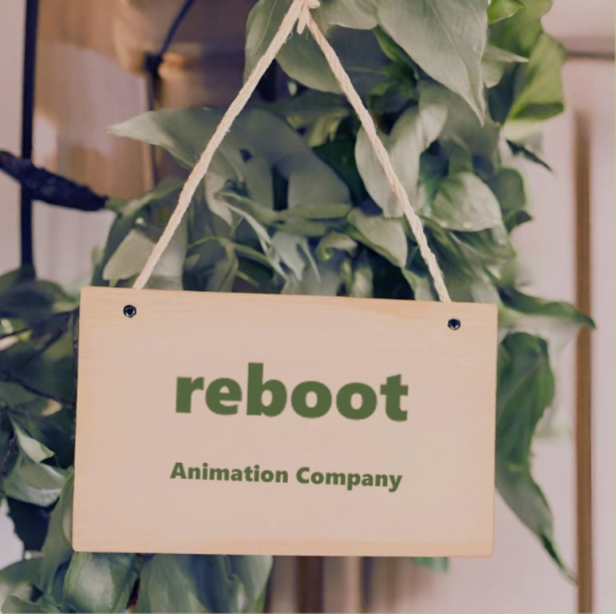
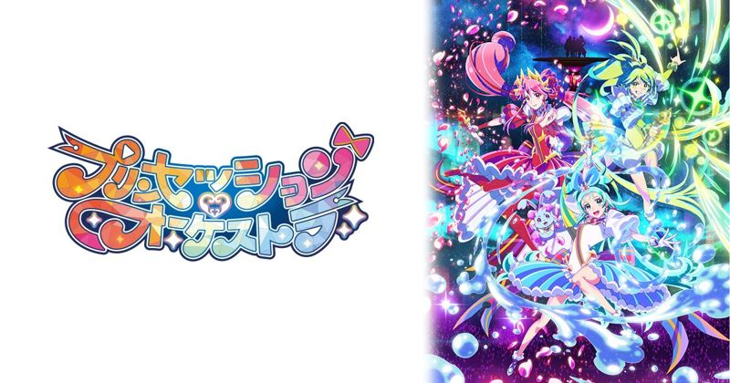
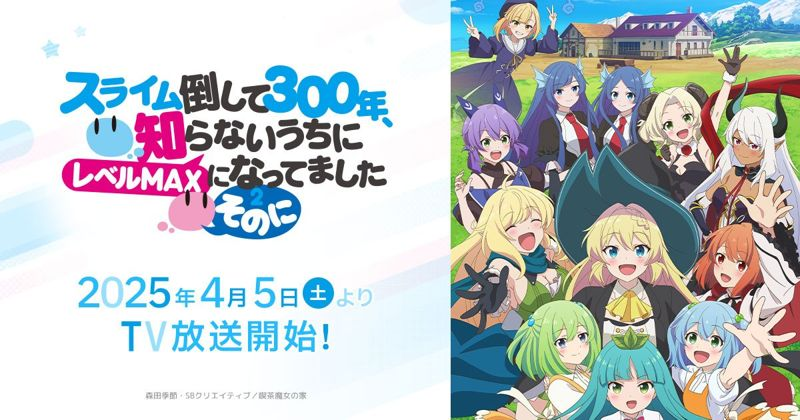
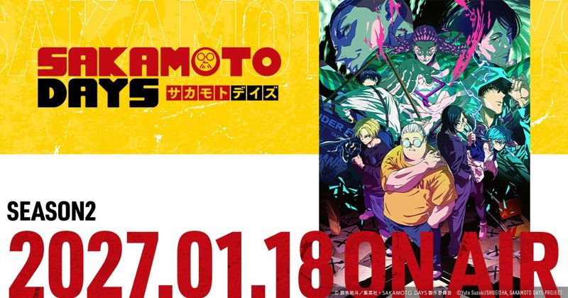

reboot（リブート）lolroute (Tokyo) ＋ reboot China
国内スタジオ lolroute海外スタジオ reboot China
Studio東京と中国、2つのスタジオ仮の文章


Strengthrebootの強み仮の文章
- 012拠点で、枚数と納期に合わせて振り分け
国内と直営の海外スタジオで作業を分け、枚数の多い話数も、急ぎの話数も受けられます。

- 02海外の作業も、国内で検査してから納品
中国で上がった動画・仕上げは、東京の国内スタジオで確かめてからお届けします。

- 03動画から仕上げまで、窓口ひとつ
動画・仕上げ・検査をまとめてご相談いただけます。やりとりは受注窓口ひとつです。

動画検査・色指定検査は国内作業のみです。国内作業やレイアウト・作監・動画検査・色指定検査・線撮は、海外動仕をいただける会社様を優先してお引き受けしております。
実績仮の文章
- 参加作品165本以上2023〜2025年
- 月間の対応枚数〇〇,〇〇〇枚2拠点の合計
- スタッフ〇〇名国内・海外
- 拠点2拠点東京・中国




主な取引先〇〇株式会社、〇〇スタジオ ほか（掲載許可を確認中）
作品履歴をすべて見る（165作品）お客様の声仮の文章

「急ぎの話数でも、国内で検査してから上げてくれるので安心して任せられます。」
〇〇株式会社 制作プロデューサー 〇〇様（掲載許可を確認中）
「枚数の多い話数を相談したら、2拠点で振り分けて納期どおりに上げてもらえました。」
〇〇スタジオ 制作進行 〇〇様（掲載許可を確認中）
「動画から仕上げまで窓口がひとつなので、やりとりが少なくて助かっています。」
〇〇株式会社 ラインプロデューサー 〇〇様（掲載許可を確認中）
News
お知らせ仮の文章


Recruit
アニメーター募集仮の文章

lolroute で、アニメーターを募集しています。
- 出社して作画しているスタッフの正社員率は100%です。
- 雇用形態・職種：〇〇
- 専門学校のご担当者様からのご連絡も歓迎しています。

Contact
作業のご依頼仮の文章

まずは、枚数と納期だけでも
ご相談ください。
- お急ぎの場合はお電話で。TEL 〇〇-〇〇〇〇-〇〇〇〇（受付 〇〇:〇〇〜〇〇:〇〇）
- 返信の目安：〇営業日以内
作業を依頼する受注窓口のフォームへ進みます